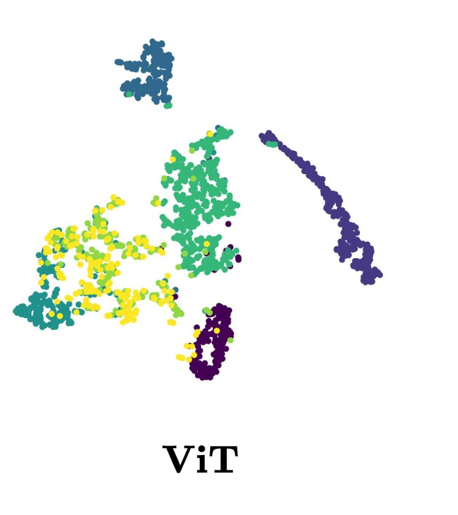
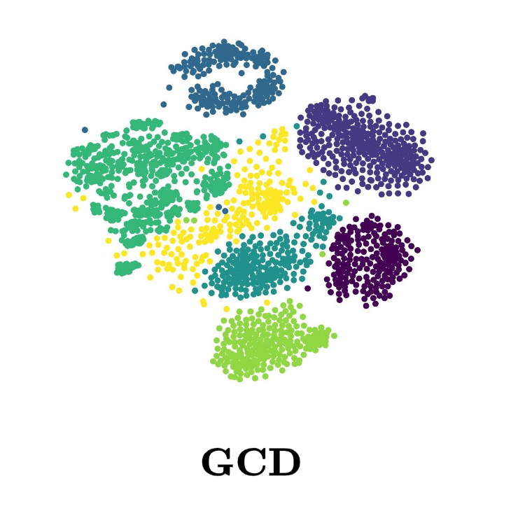
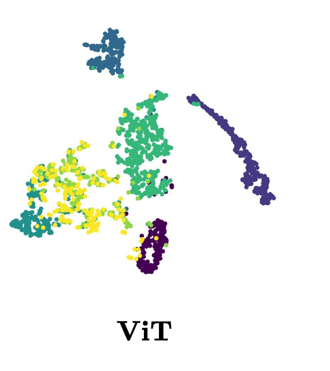
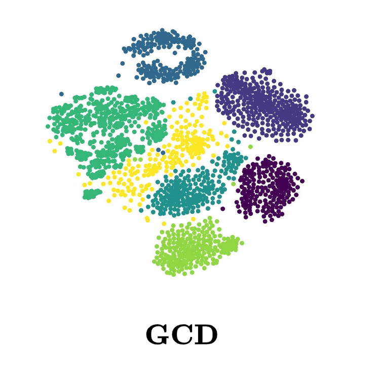

 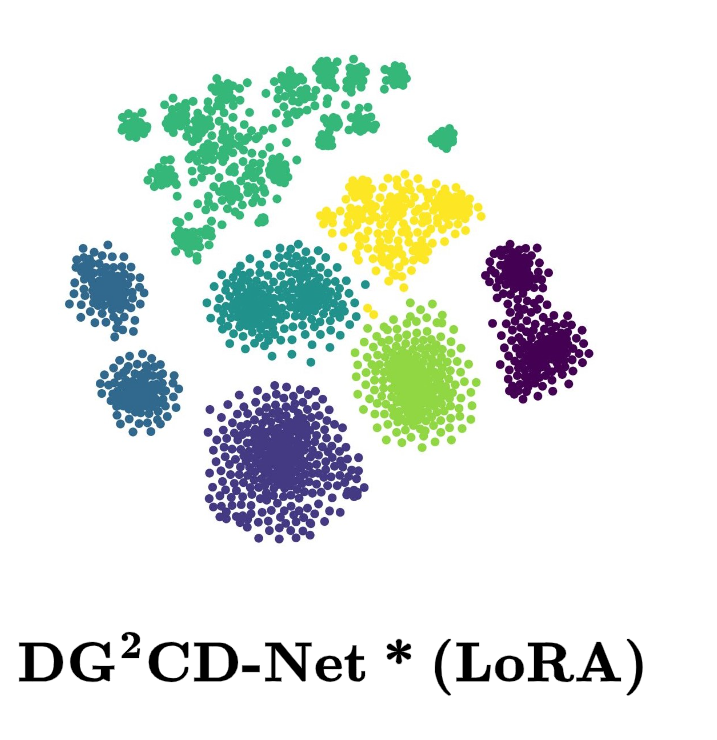
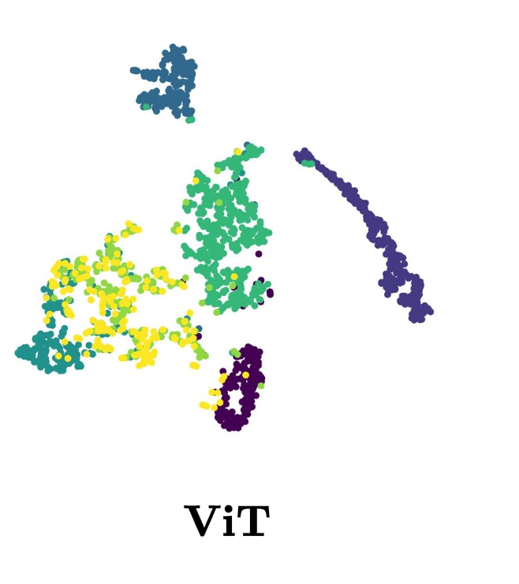
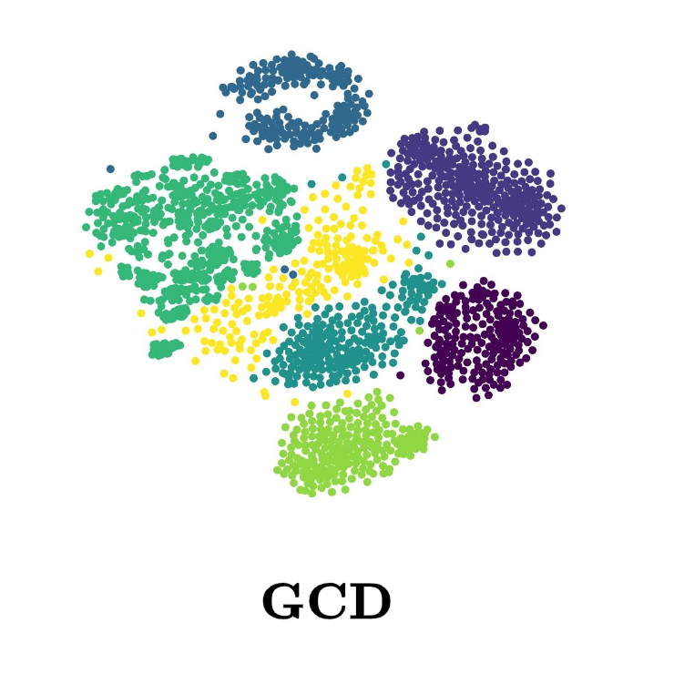
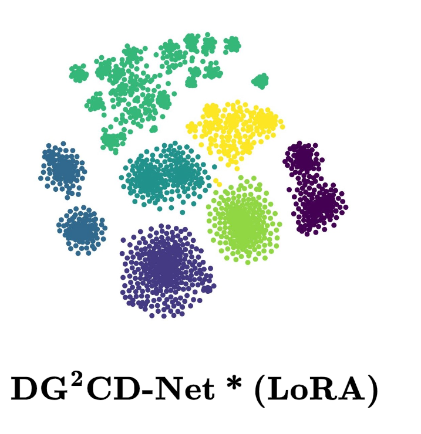
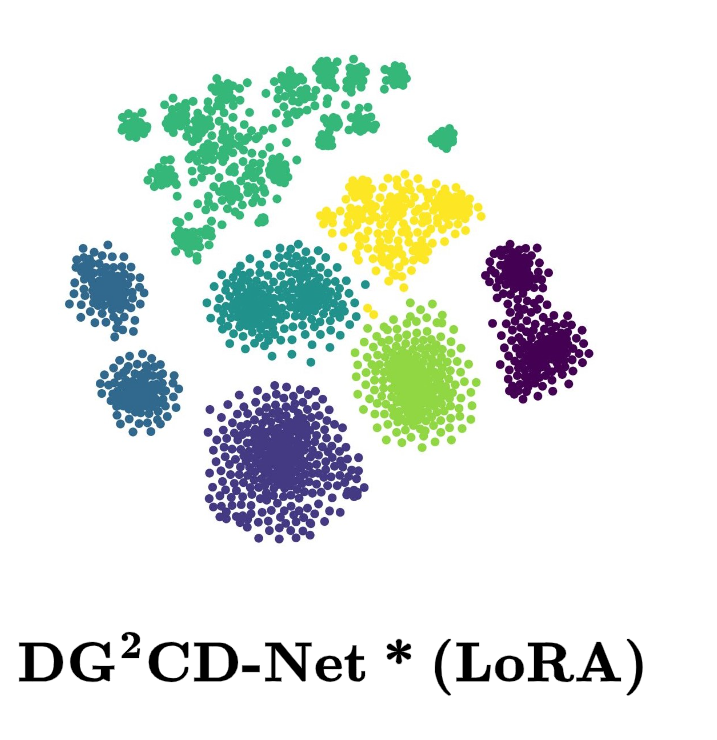
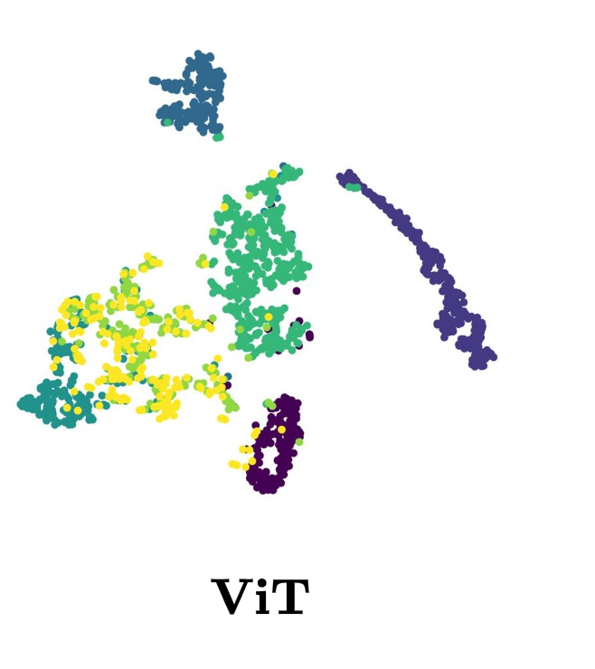
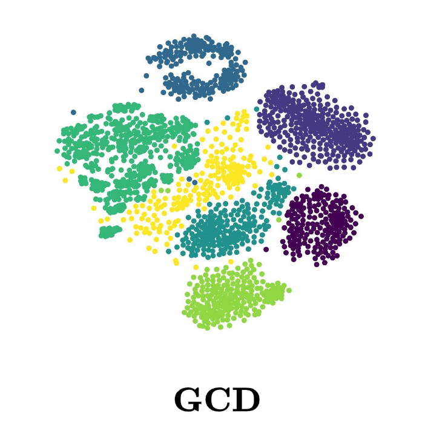
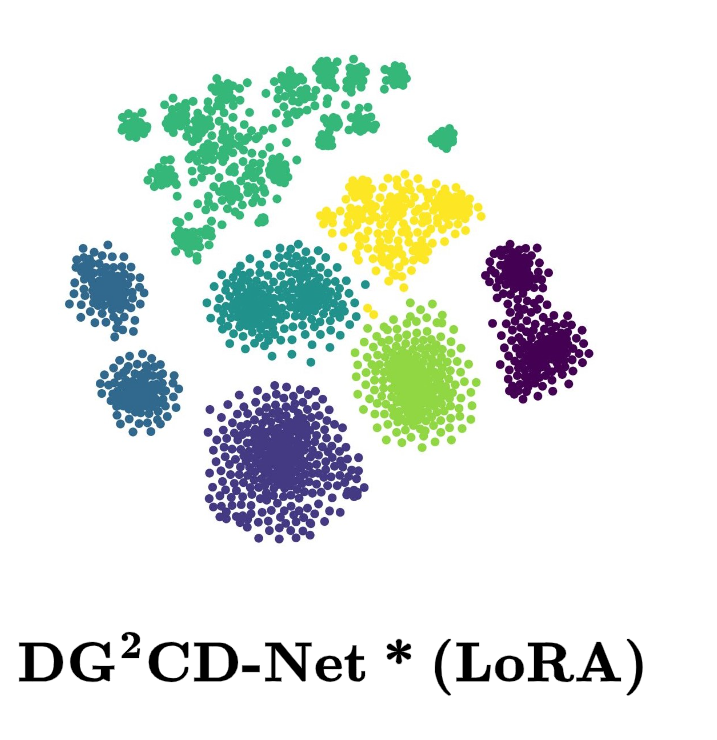
@inproceedings{Rathore2025DGCD,
author = {Rathore, Vaibhav and B, Shubhranil and Dutta, Saikat and Mehrotra, Sarthak and Kira, Zsolt and Banerjee, Biplab},
title = {When Domain Generalization meets Generalized Category Discovery: An Adaptive Task-Arithmetic Driven Approach},
booktitle = {Proceedings of the IEEE/CVF Conference on Computer Vision and Pattern Recognition (CVPR)},
year = {2025}
}